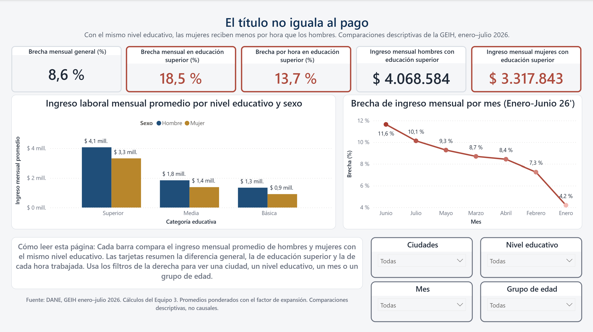
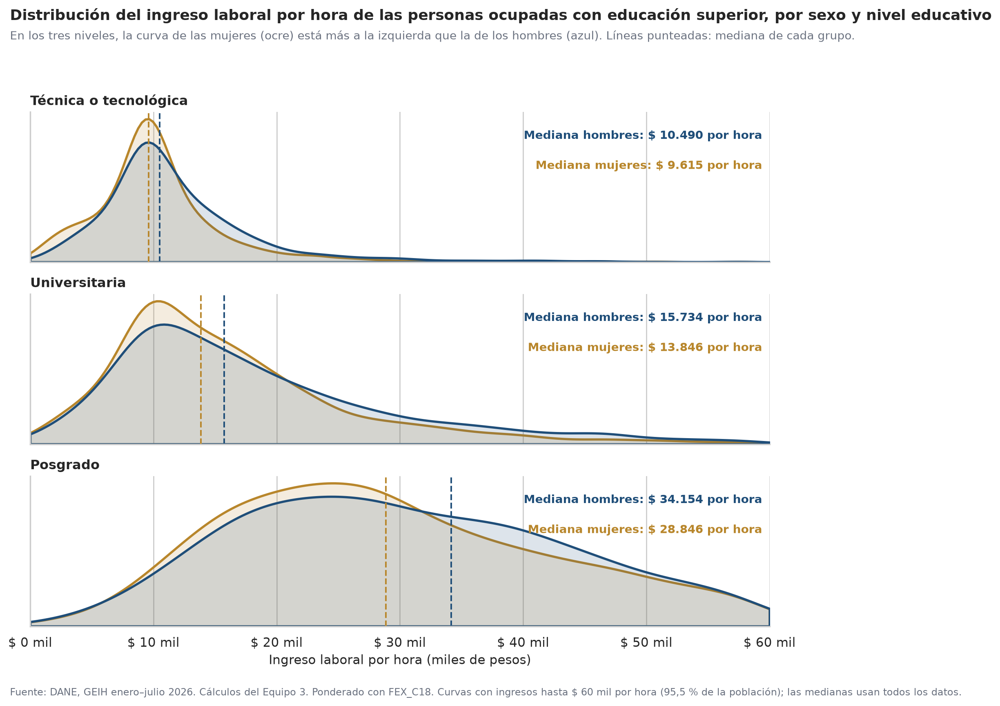
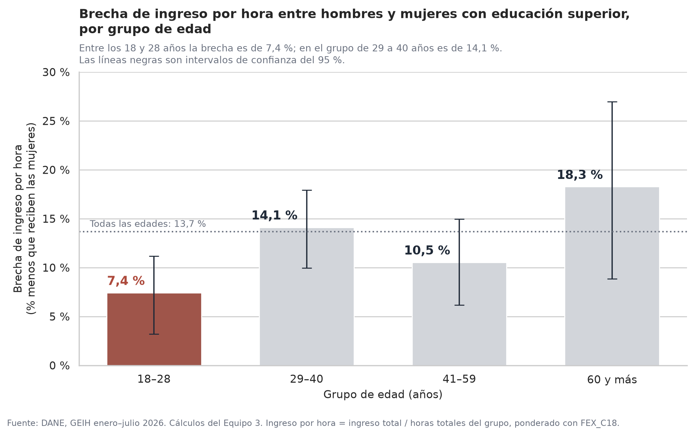
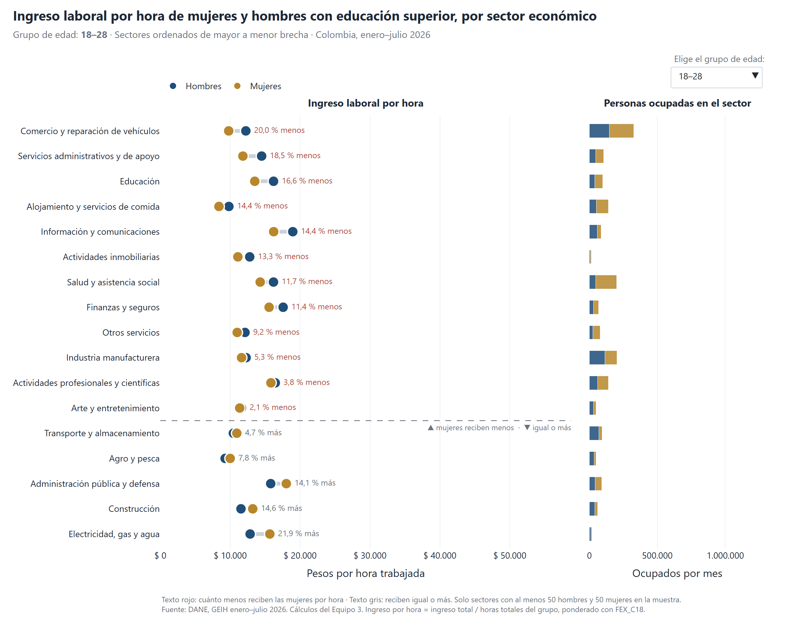
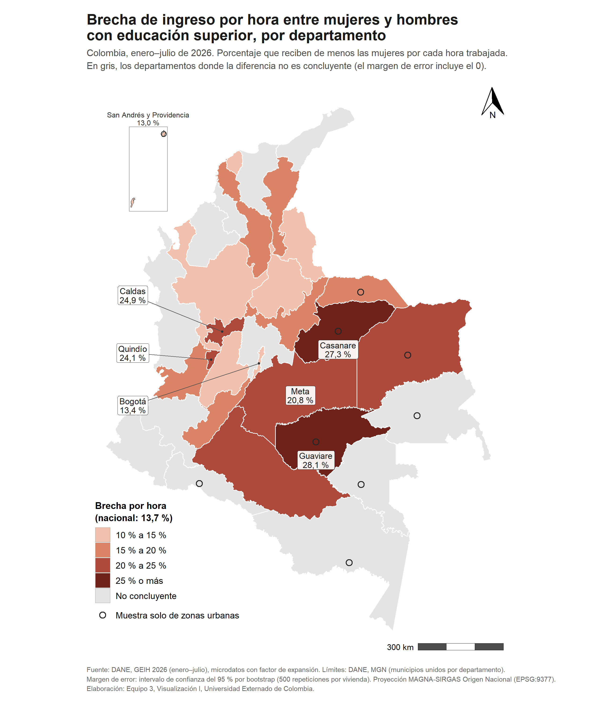

Visualización I · Proyecto 3 · Universidad Externado de Colombia
¿Mismo título, mismo ingreso?
¿Qué diferencias de ingreso laboral se observan entre mujeres y hombres con educación superior en Colombia (enero–julio 2026) y cómo varían según la edad y el departamento?
Equipo 3 · Docentes: Adriana Pineda y Paola Moreno · Noviembre de 2026
Por cada $ 100 que recibe por hora un hombre con educación superior…
…una mujer con educación superior recibe $ 86,30. La diferencia, 13,7 %, es la brecha de ingreso por hora.
Personas ocupadas con educación superior, todas las edades. DANE, GEIH enero–julio 2026. Cálculos del Equipo 3.
Para quién es esta historia y qué queremos responder
Audiencia
Mujeres de 18 a 28 años que terminan o acaban de terminar un programa técnico, tecnológico o universitario y van a buscar su primer empleo.Qué necesitan entender
Si con el mismo título les van a pagar lo mismo que a un hombre, si la diferencia cambia con la edad y si depende del sector y del departamento donde trabajen. Con eso pueden llegar mejor informadas a una entrevista o a una negociación salarial.Pregunta
¿Qué diferencias de ingreso laboral se observan entre mujeres y hombres con educación superior en Colombia (enero–julio 2026) y cómo varían según la edad y el departamento?Cómo leer las cifras de esta presentación
| Término | Qué significa |
|---|---|
| Educación superior | Técnica, tecnológica, universitaria o posgrado (título más alto alcanzado). |
| Ingreso por hora | Ingreso laboral del mes dividido entre las horas trabajadas en el mes. |
| Brecha | Cuánto menos recibe una mujer frente a un hombre con el mismo nivel. 13,7 % = por cada $ 100 de él, ella recibe $ 86,30. |
| Margen de error | Rango en el que, con 95 % de confianza, está la cifra real. Si incluye el 0, no podemos afirmar que haya brecha. |
personas ocupadas con educación superior en la encuesta (enero–julio 2026)
horas a la semana trabajan hombres y mujeres: por eso comparamos por hora
Fuente: DANE, Gran Encuesta Integrada de Hogares (GEIH) 2026, enero–julio, con factor de expansión. Cálculos del Equipo 3.
La Gran Idea
Brecha por hora, educación superior. Margen de error: 11,2 % a 16,3 %.
Brecha al mes: $ 4,07 millones frente a $ 3,32 millones.
Brecha por hora a los 18–28 años y a los 29–40 años.
departamentos donde la brecha es concluyente (el margen de error no incluye el 0).
Cómo se reparte la historia
¿Cuánto reciben al mes hombres y mujeres según su nivel educativo? ¿Por qué el promedio general esconde la brecha?
¿La diferencia está en todos los ingresos o solo en los altos? ¿Cambia con la edad? ¿En qué sectores es mayor?
¿En qué departamentos se puede afirmar que hay brecha y dónde no alcanza la muestra?
Fuente: DANE, GEIH 2026 (enero–julio). Margen de error: intervalo de confianza del 95 % por bootstrap (500 repeticiones por vivienda). Cálculos del Equipo 3.
Con educación superior la brecha es más del doble que en el promedio general

Brecha mensual, todas las personas ocupadas
Brecha mensual, personas con educación superior
¿Por qué el promedio general esconde la brecha?
Entre las mujeres ocupadas, el 44,1 % tiene educación superior; entre los hombres, el 29,7 %. Al mezclar todos los niveles, ellas suben el promedio porque estudiaron más. Por eso comparamos personas con el mismo nivel educativo.Fuente: DANE, GEIH 2026 (enero–julio), con factor de expansión. Tablero: powerbi/Equipo3_Proyecto3_Dashboard.pbix.
La diferencia no está solo en los sueldos altos: aparece en los tres niveles educativos

Cómo leerlo: donde la curva es más alta, hay más personas con ese ingreso. La línea punteada es la mediana: la mitad gana menos que ese valor.
| Mediana por hora | Hombres | Mujeres |
|---|---|---|
| Técnica o tecnológica | $ 10.490 | $ 9.615 |
| Universitaria | $ 15.734 | $ 13.846 |
| Posgrado | $ 34.154 | $ 28.846 |
Fuente: DANE, GEIH 2026 (enero–julio). Ponderado con factor de expansión. Curvas hasta $ 60 mil por hora (95,5 % de la población); las medianas usan todos los datos.
Al comenzar la vida laboral la brecha es menor; en el grupo de 29 a 40 años es casi el doble

18 a 28 años: lo que recibe una mujer por cada $ 100 de un hombre (brecha 7,4 %)
29 a 40 años: lo que recibe una mujer por cada $ 100 de un hombre (brecha 14,1 %)
Lo que no dice
Compara personas distintas de cada edad en 2026. No sigue a las mismas mujeres a lo largo de su vida, ni explica por qué la brecha es mayor después de los 28.Fuente: DANE, GEIH 2026 (enero–julio). Líneas negras: intervalo de confianza del 95 % (bootstrap por vivienda, 500 repeticiones). Cálculos del Equipo 3.
El sector cambia la respuesta: entre los 18 y 28 años, las mujeres reciben menos por hora en 12 de 17 sectores

- Brechas más altas a los 18–28: comercio (20,0 %), servicios administrativos (18,5 %) y educación (16,6 %).
- En 5 sectores las jóvenes reciben igual o más (transporte, agro, administración pública, construcción y electricidad, gas y agua).
- Con todas las edades, salud tiene la brecha más alta: 42,3 % ($ 57,70 por cada $ 100). Allí el 76 % de quienes tienen educación superior son mujeres.
Solo sectores con al menos 50 hombres y 50 mujeres en la muestra. El dato no separa profesiones dentro de un sector (por ejemplo, medicina y enfermería).
Fuente: DANE, GEIH 2026 (enero–julio). Sectores: secciones de la CIIU Rev. 4 A.C. Cálculos del Equipo 3.
En 21 de los 33 departamentos la brecha es concluyente; la más firme está en el Eje Cafetero

| Departamento | Brecha por hora | Por cada $ 100 | Ojo |
|---|---|---|---|
| Caldas | 24,9 % | $ 75,10 | Muestra grande, margen estrecho |
| Quindío | 24,1 % | $ 75,90 | |
| Meta | 20,8 % | $ 79,20 | |
| Guaviare · Casanare | 28,1 · 27,3 % | $ 71,90 · 72,70 | Solo urbana, muestra pequeña |
| Bogotá | 13,4 % | $ 86,60 | Casi igual al país (13,7 %) |
Decisiones del mapa: unidad departamental (la GEIH no da cifras por municipio), cortes de 5 en 5 desde 10 % (ningún departamento concluyente tiene menos de 11,4 %), proyección MAGNA-SIRGAS Origen Nacional y San Andrés en un recuadro.
Fuente: DANE, GEIH 2026 (enero–julio) y Marco Geoestadístico Nacional (municipios unidos por departamento). Intervalos por bootstrap. Cálculos del Equipo 3.
El título abre la puerta, pero no garantiza el mismo pago por hora
Lo que encontramos
- Con educación superior, las mujeres reciben 13,7 % menos por hora (18,5 % al mes). El promedio general (8,6 %) la esconde.
- La diferencia está en toda la distribución y en los tres niveles: técnica, universitaria y posgrado.
- Es menor al comenzar (7,4 % a los 18–28) y casi el doble a los 29–40 (14,1 %).
- Cambia según el sector (de 42,3 % en salud a cifras negativas) y el departamento (concluyente en 21 de 33).
Para ti, que vas a buscar tu primer empleo
- Compara por hora, no solo el salario mensual.
- Averigua cuánto paga el cargo en tu sector y tu región antes de aceptar una oferta.
- Usa los gráficos interactivos para ver tu sector y tu edad.
Lo que estos datos no dicen
No prueban discriminación ni explican por qué existe la brecha: no tienen en cuenta el cargo, la carrera, la experiencia ni el tamaño de la empresa. Describen dónde y cuánto, no por qué.Fuente: DANE, GEIH 2026 (enero–julio). Cálculos del Equipo 3.
Fuentes, definiciones y limitaciones
Fuentes
DANE, Gran Encuesta Integrada de Hogares (GEIH) 2026, enero–julio, marco 2018. Tablas "Características generales" y "Ocupados", unidas por vivienda, hogar y persona.
DANE, Marco Geoestadístico Nacional, capa municipal; los municipios se unen por departamento.
Productos
Repositorio con datos, código y LEEME: github.com/AlejandroP212/proyecto3-narrativa-visual
Tablero: Power BI Service · Notebook de Python · R Markdown del mapa · Anexo de uso de IA.
Definiciones
- Educación superior: nivel más alto alcanzado técnico, tecnológico, universitario o posgrado (P3042 = 8 a 13).
- Ingreso por hora: ingreso laboral total / horas totales del mes (horas semanales × 4,33), con factor de expansión.
- Brecha: (hombres − mujeres) / hombres × 100.
- Concluyente: el intervalo de confianza del 95 % (bootstrap por vivienda, 500 repeticiones) no incluye el 0.
- Edad: 18–28 es el rango de juventud de la Ley 1622 de 2013.
Limitaciones
- Descriptivo, no causal: no controla cargo, carrera, experiencia ni empresa.
- Solo trabajo remunerado: quien busca empleo o trabaja sin pago no aparece.
- Edad transversal: compara personas distintas, no trayectorias.
- Ingreso declarado por la persona encuestada; siete meses, no un año.
- Territorio: en 9 departamentos la muestra es solo urbana y pequeña.
Detalle de cálculos y cifras de control: docs/Definiciones_compartidas.md y python/Equipo3_Proyecto3_Analisis.ipynb.